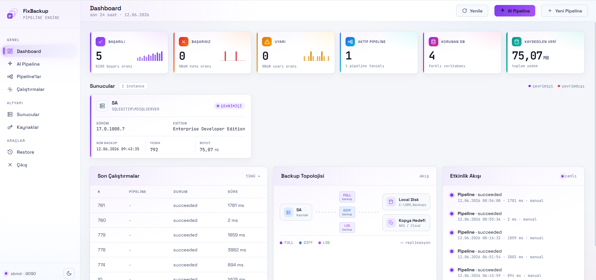
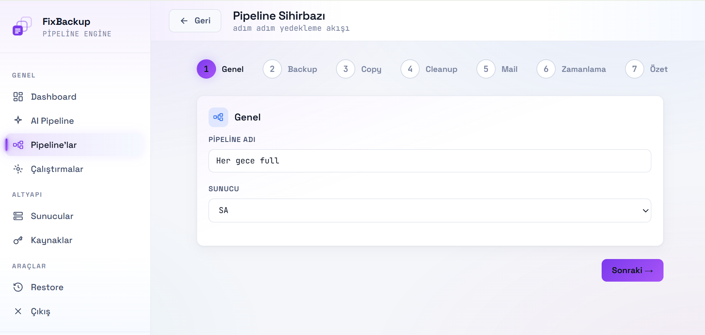
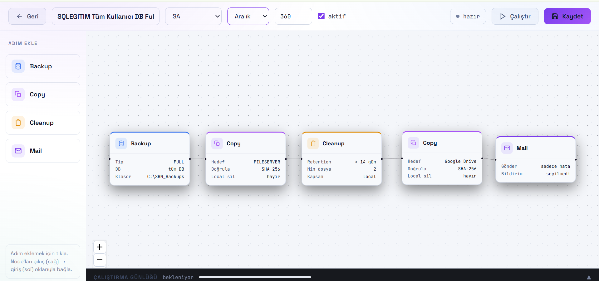
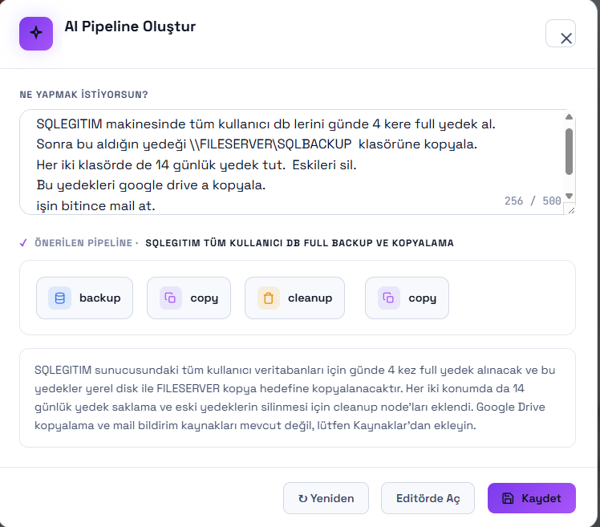
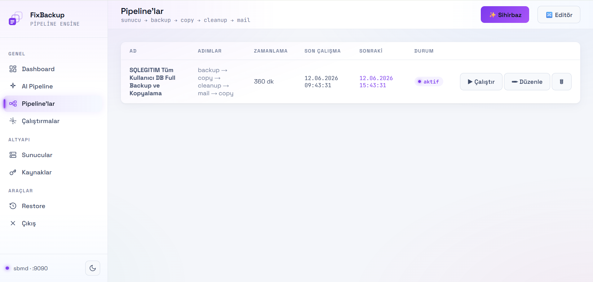
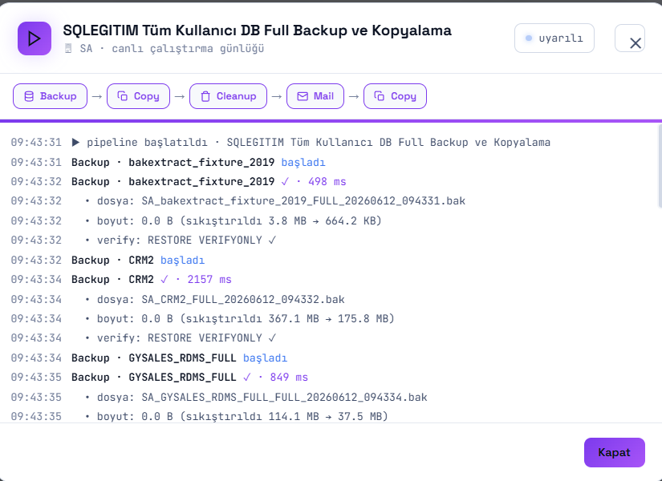

24 saatlik veri açığı
Günde bir kez alınan genel sistem yedeği, son başarılı kopyadan sonraki işlemleri korumaz.
Yedekleme, doğrulama, kopyalama, saklama ve bildirim adımlarını tek bir pipeline içinde yönetin. Her çalışmanın ne zaman, nerede ve hangi sonuçla tamamlandığını görün.

İşletim sistemi seviyesinde alınan tek bir günlük kopya; SQL Server’ın işlem ritmini, doğrulama ihtiyacını ve kurtarma hedefini karşılamaz. FixBackup, yedeklemeyi dosya üretmekten çıkarıp izlenebilir bir operasyona dönüştürür.
Günde bir kez alınan genel sistem yedeği, son başarılı kopyadan sonraki işlemleri korumaz.
Aynı ortamda ve aynı yöntemle tutulan kopyalar, arıza anında birlikte erişilemez hale gelebilir.
Checksum ve restore doğrulaması yapılmayan bir dosyanın ihtiyaç anında açılacağı garanti değildir.
FixBackup her görevi sıralı, ölçülebilir ve tekrar kullanılabilir bir pipeline adımına dönüştürür.
Full, differential veya log yedeğini compression, checksum ve verify seçenekleriyle üretir.
Yedeği dosya sunucusuna, NAS’a ya da tanımlı bulut hedefine aktarır.
Saklama süresini ve korunacak minimum kopya sayısını birlikte uygular.
Başarı, uyarı veya hata sonucunu ilgili ekiplere gönderir.
Akışı belirlenen aralıkta veya saatte otomatik çalıştırır.
Üç veri kopyası, iki farklı ortam ve kurum dışında en az bir kopya. FixBackup hedefleri ve saklama kurallarını pipeline’ın parçası yapar.
Hazır adımlarla ilerleyin, görsel editörde akışı kurun veya ihtiyacınızı doğal dille tarif edin. Son karar her zaman görünür ve düzenlenebilir bir pipeline’dır.
Sunucudan yedek tipine, kopya hedefinden saklama politikasına kadar her karar sıralı bir kurulum akışında alınır.

Backup, Copy, Cleanup ve Mail adımlarını çalışma yüzeyine ekleyin; ilişkileri doğrudan görün ve her adımın parametrelerini düzenleyin.

Sunucu, sıklık, hedef ve saklama kuralını günlük dille anlatın. FixBackup uygulanabilir adımları taslak olarak çıkarır; kaydetmeden önce akışı siz onaylarsınız.

Gösterim amaçlı soyut görseller yerine FixBackup’ın gerçek ürün ekranları: operasyon ekibinin gördüğü bilgi doğrudan burada.
Başarı, hata, uyarı, korunan veritabanı ve saklanan veri miktarını aynı operasyon görünümünde izleyin.
Tanımlı akışları, çalışma zamanını, son ve sonraki çalışma bilgisini görün; gerektiğinde manuel başlatın.

Her veritabanının dosya adı, boyutu, sıkıştırma sonucu ve doğrulama bilgisini zaman damgasıyla inceleyin.

FixBackup farklı ağ, kimlik ve hedef yapılarını merkezi bir pipeline üzerinden birleştirir; SQL Server servis hesabını veya domain yapısını değiştirmeden çalışacak şekilde tasarlanmıştır.
SQL Server ile yedek hedefinin aynı Active Directory ortamında bulunması gerekmez.
SQL Server servis hesabını değiştirerek altyapı bağımlılığı oluşturmaz.
SQL Server, NAS, File Server ve bulut hedeflerinin birbirine doğrudan erişmesi gerekmez.
Yedekler SQL Server’dan bağımsız şifrelenebilir ve yalnızca yetkili kullanıcıların erişimine açılabilir.
FixBackup’ın kurumunuzdaki SQL Server yapısına nasıl uyarlanacağını birlikte değerlendirelim.